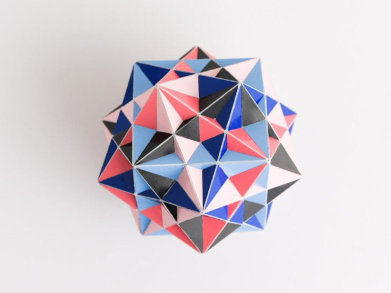

Compound of Five Cubes

This is the classical compound of five cubes. It has the same symmetry as an icosahedron or dodecahedron. Its convex hull is the dodecahedron hence this compound is a faceting of the dodecahedron. It is also a stellation of a rhombic triacontahedron, which can be seen by diving into the centre of the 3D model. This compound is one of the five regular compounds that exist. Since it is regular, its dual, the compound of five octahedra, is also a regular compound. The other regular compounds are compounds of tetrahedra (2, 5, and 10).
I made this model for my neighbour. I think the height of the model is around 10 cm. It was built in 2012.
Last Updated
2021-03-02